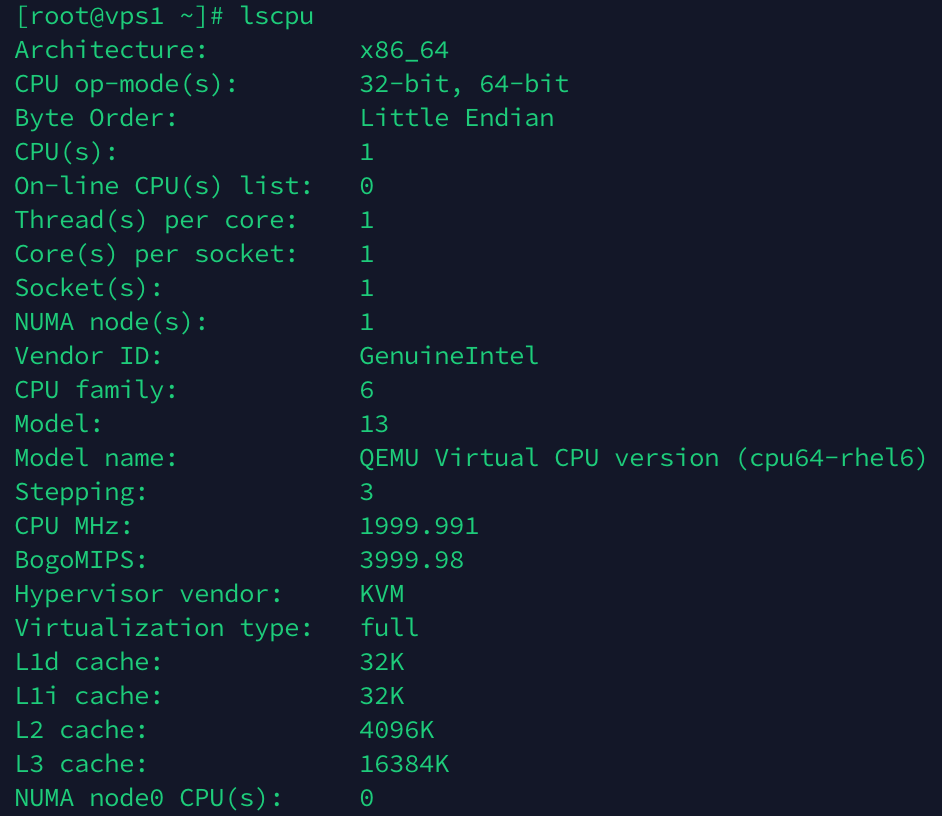
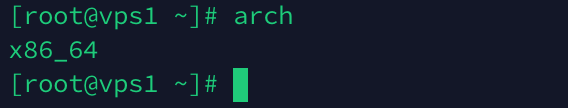
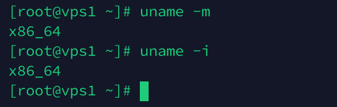
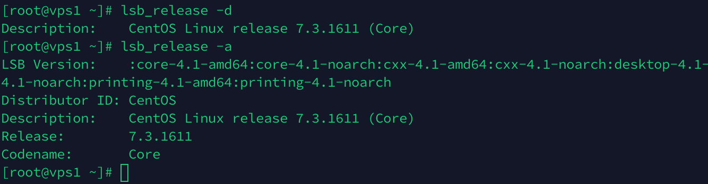
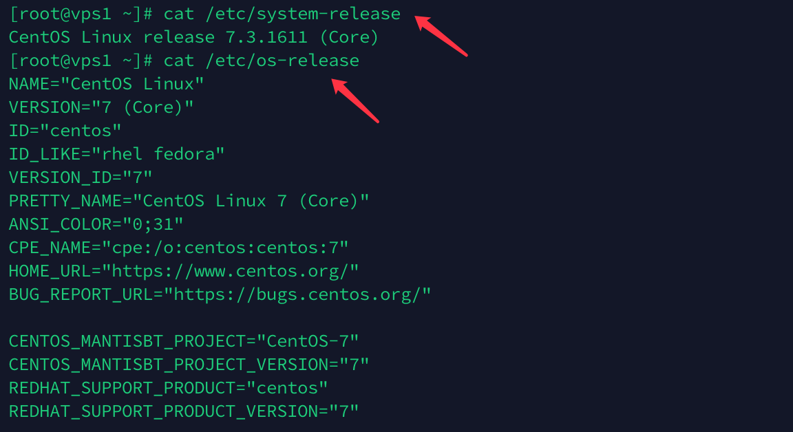
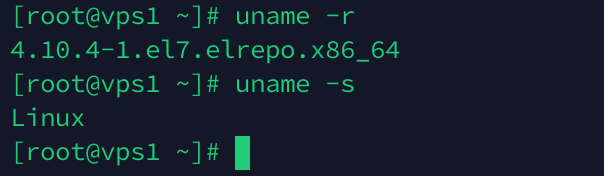
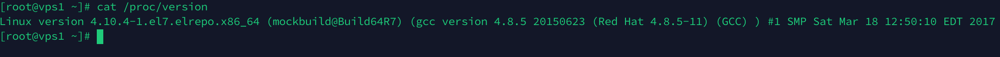
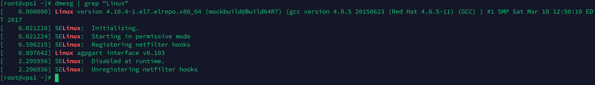

有时候,我们可能需要获取Linux系统的一些关键信息,以下列举了部分常用的命令做为备忘📝
一、查看系统架构
- hostnamectl 工具是用来管理给定主机中使用的三种类型的主机名，可以提供有关你的机器的最基本的信息。
hostnamectl status
lscpu命令从sysfs和/proc/cpuinfo收集cpu体系结构信息，命令的输出比较易读，命令输出的信息包含cpu数量，线程，核数，套接字等。
arch命令主要用于显示当前主机的硬件结构类型，arch命令输出的结果有：i386、i486、mips、alpha等。
uname命令的英文全称即“Unix name”，用于显示系统相关信息，比如主机名、内核版本号、硬件架构等。

-m 显示计算机硬件架构；-i 显示硬件平台
二、查看系统发行版本
LSB是Linux Standard Base的缩写，lsb_release命令用来显示LSB和特定版本的相关信息。如果使用该命令时不带参数，则默认加上-v参数。
-d 显示系统全称和版本号；-a 显示LSB所有信息
/etc/*-release文件通常被视为操作系统的标识。在
/etc目录下放置了很多记录着发行版各种信息的文件，每个发行版都各自有一套这样记录着相关信息的文件。其中
/etc/redhat-release和/etc/system-release,/etc/os-release文件是指向/etc/[发行版名称]-release文件的一个连接。
三、查看内核版本
uname用于显示系统相关信息，比如主机名、内核版本号、硬件架构等。
-r 显示当前系统的内核版本; -s 显示内核名称
/proc/version文件记录了 Linux 内核的版本、用于编译内核的 gcc 的版本、内核编译的时间，以及内核编译者的用户名。

dmesg（展示信息display message 或驱动程序信息driver message）是大多数类 Unix 操作系统上的一个命令，用于打印内核的消息缓冲区的信息。
